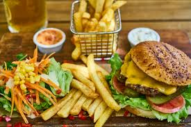

Fast food is a type of mass-produced food designed for commercial resale, with a strong priority placed on speed of service. Fast food is a commercial term, limited to food sold in a restaurant or store with frozen, preheated or precooked ingredients and served in packaging for take-out or takeaway. Fast food was created as a commercial strategy to accommodate large numbers of busy commuters, travelers and wage workers. In 2018, the fast-food industry was worth an estimated $570 billion globally.[1]
The concept of ready-cooked food for sale is closely connected with urban developments. Homes in emerging cities often lacked adequate space or proper food preparation accoutrements. Additionally, procuring cooking fuel could cost as much as purchased produce. Frying foods in vats of searing oil proved as dangerous as it was expensive. Homeowners feared that a rogue cooking fire "might easily conflagrate an entire neighborhood".[11]